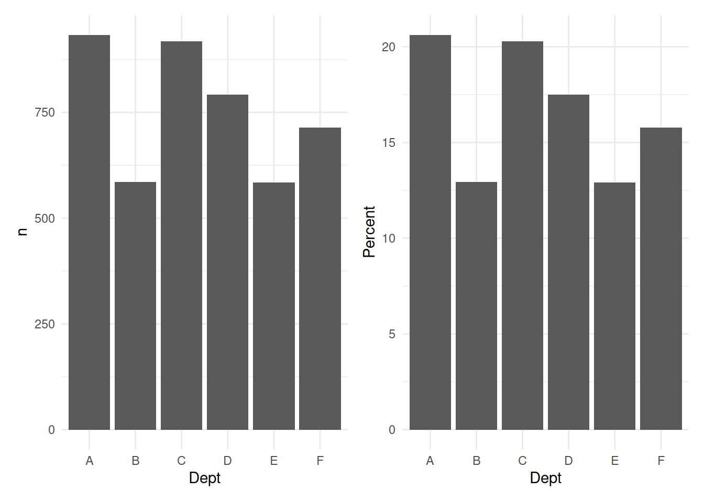
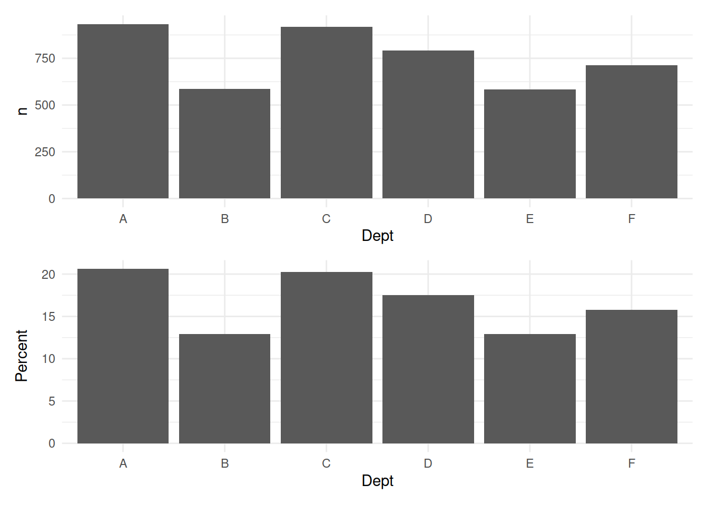
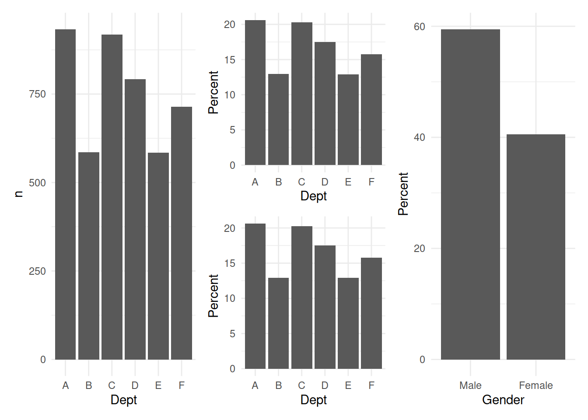
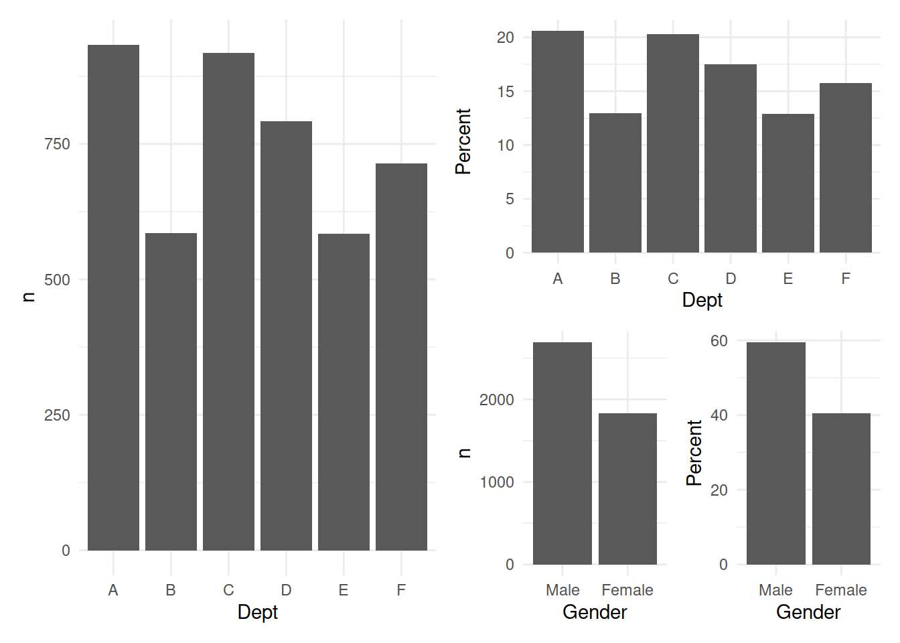
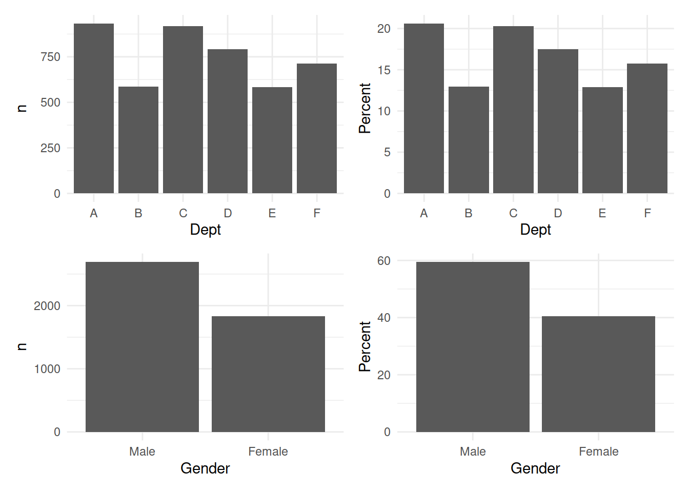

Patchwork is a really neat R package that allows us to combine graphics in a fairly intuitive and ggplot-friendly fashion. Adding rows happens with + and dividing columns of plots works with /. It also respects orders of operations with parentheses. Let me use the Berkeley data to demonstrate a bit of this. I will make use of three packages that you may or may not have.
install.packages(c("patchwork","janitor","DescTools"), dependencies=TRUE)As a note, you can make use of a library::function approach as well as loading libraries to directly reference commands. So janitor::tabyl references the tabyl function in the janitor package.
library(patchwork)
# A first plot of the count by department.
UCBAdmissions %>% DescTools::Untable() %>% janitor::tabyl(Dept) %>% ggplot() + aes(x=Dept, y=n) + geom_col() + theme_minimal() -> Plot1
# A second plot of the proportion by department. Though it is called a percent, it is not.
UCBAdmissions %>% DescTools::Untable() %>% janitor::tabyl(Dept) %>% ggplot() + aes(x=Dept, y=percent*100) + geom_col() + theme_minimal() + labs(y="Percent") -> Plot2
# A first patchwork
Plot1 + Plot2
Using the / to put them on top of one another.
Plot1 / Plot2
Now to put the gender data together.
# A first plot of the count by gender.
UCBAdmissions %>% DescTools::Untable() %>% janitor::tabyl(Gender) %>% ggplot() + aes(x=Gender, y=n) + geom_col() + theme_minimal() -> Plot1A
# A second plot of the proportion by gender.
UCBAdmissions %>% DescTools::Untable() %>% janitor::tabyl(Gender) %>% ggplot() + aes(x=Gender, y=percent*100) + geom_col() + theme_minimal() + labs(y="Percent") -> Plot2A
Plot1 + Plot2 / Plot2 + Plot2A
That’s not really what I wanted. The parentheses separate it into parts.
Plot1 + Plot2 / (Plot1A + Plot2A)
It wants a complete statement that fully respects the order of operations. So put the top together in parentheses and the bottom, as well.
(Plot1 + Plot2) / (Plot1A + Plot2A)